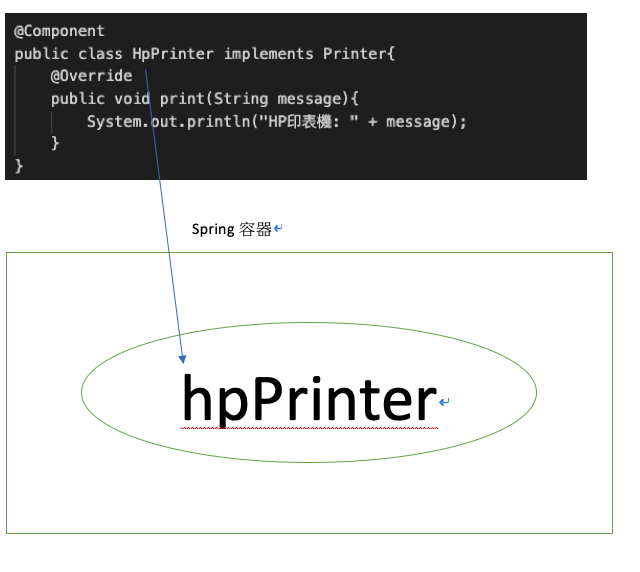

<!DOCTYPE html>
<html lang="zh-tw"><head>
  <meta charset="utf-8">
  <title>JimChien</title>

  <!-- mobile responsive meta -->
  <meta name="viewport" content="width=device-width, initial-scale=1, maximum-scale=1">
  <meta name="description" content="IOC 及 DI 的運作">
  <meta name="author" content="Jim Chien">
  <meta name="generator" content="Hugo 0.88.1" />

  <!-- plugins -->
  
  <link rel="stylesheet" href="https://jimchien666.github.io/plugins/bootstrap/bootstrap.min.css ">
  
  <link rel="stylesheet" href="https://jimchien666.github.io/plugins/slick/slick.css ">
  
  <link rel="stylesheet" href="https://jimchien666.github.io/plugins/themify-icons/themify-icons.css ">
  
  <link rel="stylesheet" href="https://jimchien666.github.io/plugins/venobox/venobox.css ">
  

  <!-- Main Stylesheet -->
  
  <link rel="stylesheet" href="https://jimchien666.github.io/scss/style.min.css" media="screen">

  <!--Favicon-->
  <link rel="shortcut icon" href="https://jimchien666.github.io/images/favicon.png " type="image/x-icon">
  <link rel="icon" href="https://jimchien666.github.io/images/favicon.png " type="image/x-icon">

  <!-- google analitycs -->
  <script>
    (function (i, s, o, g, r, a, m) {
      i['GoogleAnalyticsObject'] = r;
      i[r] = i[r] || function () {
        (i[r].q = i[r].q || []).push(arguments)
      }, i[r].l = 1 * new Date();
      a = s.createElement(o),
        m = s.getElementsByTagName(o)[0];
      a.async = 1;
      a.src = g;
      m.parentNode.insertBefore(a, m)
    })(window, document, 'script', '//www.google-analytics.com/analytics.js', 'ga');
    ga('create', 'Your ID', 'auto');
    ga('send', 'pageview');
  </script>

</head><body>
<!-- preloader start -->
<div class="preloader">
  
</div>
<!-- preloader end -->
<!-- navigation -->
<header class="navigation">
  <div class="container">
    
    <nav class="navbar navbar-expand-lg navbar-white bg-transparent border-bottom pl-0">
        <a class="navbar-brand desktop-view text-primary" href="https://jimchien666.github.io/">Jim部落格</a>
        <div style="width: 60%;"></div>
        <ul class="navbar-nav">
          
          
          <li class="nav-item">
            <a class="nav-link" href="https://jimchien666.github.io/blog">文章</a>
          </li>
          
          
          
          <li class="nav-item">
            <a class="nav-link" href="https://jimchien666.github.io/booklist">讀書清單</a>
          </li>
          
          
          
          <li class="nav-item">
            <a class="nav-link" href="https://jimchien666.github.io/">關於我</a>
          </li>
          
          
        </ul>

        
        <!-- search -->
        <div class="search pl-lg-4" style="float: right;">
          <button id="searchOpen" class="search-btn"><i class="ti-search"></i></button>
          <div class="search-wrapper">
            <form action="https://jimchien666.github.io//search" class="h-100">
              <input class="search-box px-4" id="search-query" name="s" type="search" placeholder="Type & Hit Enter...">
            </form>
            <button id="searchClose" class="search-close"><i class="ti-close text-dark"></i></button>
          </div>
        </div>
        
    </nav>
  </div>
</header>
<!-- /navigation -->

<section class="section-sm">
  <div class="container">
    <div class="row">
      <div class="col-lg-10 mx-auto">
        
        <a href="/categories/java"
          class="text-primary">Java</a>
        
        <h2>Spring 中控制反轉及依賴注入</h2>
        <div class="mb-3 post-meta">
          <span>By Jim Chien</span>
          
          <span class="border-bottom border-primary px-2 mx-1"></span>
          <span>2021/06/29</span>
          
        </div>
        <hr>
        <div class="content mb-5">
          <!-- raw HTML omitted -->
<h4 id="ioc--inversion-of-control-控制反轉">IoC = Inversion of Control (控制反轉)</h4>
<p>什麼是 IoC 呢？我們以印表機來舉個例子。</p>
<p>假設這世界上只有Hp品牌的印表機，而學校的老師和同學們都需要一台印表機，這時我們會這麼寫</p>
<pre tabindex="0"><code>public interface Printer {
    void print(String message);
}

public class HpPrinter implements Printer{
    @Override
    public void print(String message){
        System.out.println(&quot;HP印表機: &quot; + message);
    }
}

public class Teacher {
    private Printer printer = new HpPrinter();
    public void teach(){
        printer.print(&quot;I'm a teacher&quot;);
    }
}

public class Student {
    private Printer printer = new HpPrinter();
    public void learn(){
        printer.print(&quot;I'm a student&quot;);
    }
}
</code></pre><p>這時老師跟學生都有一台印表機，且都能將自己的身份印出</p>
<p>但這時，新的印表機品牌出現了</p>
<pre tabindex="0"><code>public class CanonPrinter implements Printer{
    @Override
    public void print(String message){
        System.out.println(&quot;Canon印表機: &quot; + message);
    }
}
</code></pre><p>這時候，如果老師跟學生都要統一換成新品牌時，我們必須改兩個地方，會造成一個困擾，假設我用 10 次，就要改 10 次，非常麻煩</p>
<p>而學生跟老師只是需要一台印表機，並不在乎品牌．</p>
<p>這時候呢 Spring 出現了，他幫我們保管了印表機這個 Object，而當有人需要使用印表機時，Spring 就會提供他使用</p>
<p>程式就變這樣</p>
<pre tabindex="0"><code>public class Teacher {
    private Printer;
    public void teach(){
        printer.print(&quot;I'm a teacher&quot;);
    }
}

public class Student {
    private Printer;
    public void learn(){
        printer.print(&quot;I'm a student&quot;);
    }
}
</code></pre><p>當程式啟動時，Spring 會預先存放一台印表機 Object 在Spring 容器內，而當老師或學生需要使用時，容器會提供給他們使用</p>
<p>好了我們再回頭看IoC的定義</p>
<p>原本印表幾的控制權教在 Teacher 和 Student 手上，而利用 Spring 後，控制權轉交到 Spring 容器手上</p>
<p>由 Spring 容器去 new Object，這會帶來以下好處：</p>
<ol>
<li>Loose coupling 鬆耦合</li>
<li>Lifecycle Management 生命週期管理</li>
<li>More testable 方便測試</li>
</ol>
<p>在我們了解 Spring IoC 觀念後，我們來講講如何將印表機交給 Spring 容器管理</p>
<h4 id="component">@Component</h4>
<ul>
<li>用法：只能加在 class 上</li>
<li>用途：將該 class 變成 Spring 容所管理的 object</li>
</ul>
<pre tabindex="0"><code>@Component
public class HpPrinter implements Printer{
    @Override
    public void print(String message){
        System.out.println(&quot;HP印表機: &quot; + message);
    }
}
</code></pre><p>這時再啟動 Spring 程式時，Spring 會提供一個 Spring 容器，並把有 @Component 註解的 class new 出一個 object 並存放在容器內，而這些被 Spring 容器創建並管理的 Object，我們統稱為 Bean。</p>
<p>hint. Bean 的名稱為 class name 的第一個字母轉小寫</p>
<p></p>
<h4 id="di--dependency-injection-依賴注入">DI = Dependency Injection (依賴注入)</h4>
<p>我們已經成功將 hpPrinter 成功註冊到 Spring 容器內，接下來我們要讓 Teacher 和 Student 能夠取得這台 hpPrinter</p>
<p>有兩個步驟</p>
<ol>
<li>將Teacher也變成Bean</li>
<li>printer 上面加上@Autowired</li>
</ol>
<pre tabindex="0"><code>@Component
public class Teacher {
    @Autowired
    private Printer printer;
    public void teach(){
        printer.print(&quot;I'm a teacher&quot;);
    }
}
</code></pre><p>在 printer 上加上 @Autowired，Spring 就會將 hpPrinter 交給 teacher，這個動作稱之為 Dependency Injection(依賴注入)</p>
<p>這時 teacher 就可以拿 hpPrinter 去印東西了。</p>
<h4 id="總結">總結</h4>
<p>IoC 與 DI 相輔相成，IoC 將 Object 存放在容器裡面，而 DI 使 Object 可以取得其他 Object 來使用</p>
<p>以下為 Spring IoC 常見名詞：</p>
<ul>
<li>
<p>IoC = Inversion of Control (控制反轉)</p>
</li>
<li>
<p>DI = Dependency Injection (依賴注入)</p>
</li>
<li>
<p>Bean = 存放在Spring容器裡的object</p>
</li>
<li>
<p>@Component註解 = 加在class上，將該class變成Spring容器所管理的bean</p>
</li>
<li>
<p>@Autowired註解 = 加在變數上，取得Spring容器中的Bean</p>
</li>
</ul>

        </div>

        
        
      </div>
    </div>
  </div>
</section>


<footer class="text-capitalize">
  <div class="container">
    <div class="row justify-content-center">
      
    </div>
  </div>
</footer>

<script>
  var indexURL = "https://jimchien666.github.io/index.json"
</script>

<!-- JS Plugins -->

<script src="https://jimchien666.github.io/plugins/jQuery/jquery.min.js"></script>

<script src="https://jimchien666.github.io/plugins/bootstrap/bootstrap.min.js"></script>

<script src="https://jimchien666.github.io/plugins/slick/slick.min.js"></script>

<script src="https://jimchien666.github.io/plugins/venobox/venobox.min.js"></script>

<script src="https://jimchien666.github.io/plugins/search/fuse.min.js"></script>

<script src="https://jimchien666.github.io/plugins/search/mark.js"></script>

<script src="https://jimchien666.github.io/plugins/search/search.js"></script>

<!-- Main Script -->

<script src="https://jimchien666.github.io/js/script.min.js"></script>


</body>
</html>